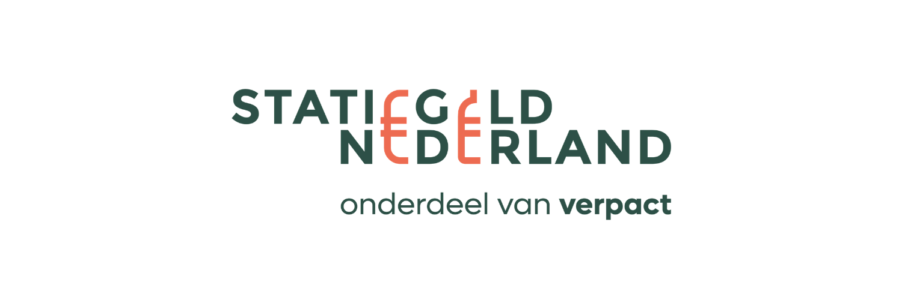

Operationele uitvoering van een drijvende publieksactivatie op de Keizersgracht tijdens Koningsdag in Amsterdam

Operationeel verantwoordelijke
27 april 2026 · Keizersgracht, Amsterdam
Verpact / Statiegeld Nederland
Ben je op zoek naar iemand die een ongewone locatie of bijzonder concept operationeel vlot trekt? Of het nu een drijvend inleverpunt, een pop-up op een drukke publieke locatie of een onverwacht format is: ik zorg dat de uitvoering klopt, de crew staat en het publiek er iets aan beleeft.
Voor Verpact werkte ik tijdens Koningsdag in Amsterdam aan het Verpact Recycle Café: een tijdelijke, drijvende activatie op de Keizersgracht ter hoogte van de Runstraat. Het concept was opgezet als een "omgekeerd café": geen plek waar bezoekers iets kwamen halen, maar juist een plek waar feestvierders op het water hun lege statiegeldflesjes, blikjes en ander verpakkingsafval konden inleveren.
Boten konden stapvoets langs of door het drijvende inleverpunt varen zonder aan te meren, waardoor afval direct werd ingezameld en niet in de grachten terechtkwam.
De activatie was onderdeel van een bredere inzet van Verpact en Statiegeld Nederland om tijdens Koningsdag vervuiling van straten en grachten te beperken.
Koningsdag in Amsterdam is een van de drukste momenten van het jaar, zeker op en rond de grachten. De activatie moest zichtbaar, toegankelijk en laagdrempelig zijn, maar tegelijkertijd veilig en strak georganiseerd blijven.
De grootste uitdaging lag in het combineren van publieksactivatie, logistiek en veiligheid op een drukke waterlocatie. Bezoekers kwamen niet lopend binnen, maar voeren langs met boten. Daardoor moest de communicatie razendsnel duidelijk zijn, moest de crew goed gepositioneerd staan en moest de doorstroom continu bewaakt worden.
Daarnaast moest het concept positief en gastvrij blijven aanvoelen: mensen moesten gestimuleerd worden om hun afval in te leveren, zonder dat het als een verplichting voelde.
Ik was verantwoordelijk voor de operationele uitvoering op locatie en het aansturen van de crew tijdens het event. Mijn focus lag op:
Ik werkte met een duidelijke taakverdeling binnen de crew, zodat iedereen wist waar hij of zij verantwoordelijk voor was. De activatie moest snel te begrijpen zijn voor voorbijvarende bezoekers - daarom lag de nadruk op zichtbaarheid, korte communicatie en een duidelijke flow:
Tijdens het event hield ik continu overzicht op drukte, veiligheid en tempo. Waar nodig stuurde ik crewleden bij, verplaatste ik mensen naar drukke punten en zorgde ik dat de activatie soepel bleef draaien zonder de vaarroute of bezoekerservaring te verstoren.
Belangrijk was dat de crew niet alleen praktisch werkte, maar ook de juiste energie uitstraalde: positief, actief en uitnodigend. Zo werd afval inleveren onderdeel van de Koningsdagbeleving in plaats van een onderbreking ervan.
Onderstaande video geeft een indruk van de sfeer en uitvoering van de activatie.
Ik help organisaties met eventmanagement, brand activations en operationele uitvoering op locatie
Neem contact op